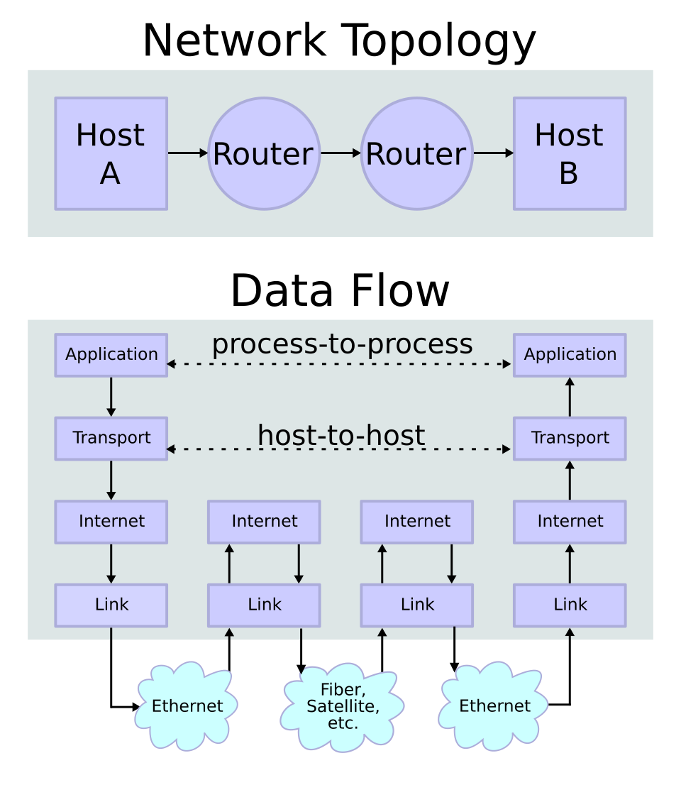

\gdef\sub#1{_{\mathrm{#1}}} \gdef\unit#1{\mathrm{#1}} \gdef\celsius{\unit{°C}} \gdef\joule{\unit{J}} \gdef\kelvin{\unit{K}} \gdef\kilogram{\unit{kg}} \gdef\liter{\unit{L}} \gdef\milliliter{\unit{mL}} \gdef\meter{\unit{m}} \gdef\mole{\unit{mol}} \gdef\newton{\unit{N}} \gdef\pascal{\unit{Pa}} \gdef\squaremeter{\meter^2} \gdef\cubicmeter{\meter^3} \gdef\newtonperkilogram{\frac{\newton}{\kilogram}} \gdef\joulepermole{\frac{\joule}{\mole}} \gdef\jouleperkilogram{\frac{\joule}{\kilogram}} \gdef\jouleperkelvin{\frac{\joule}{\kelvin}} \gdef\jouleperkilogramperkelvin{\frac{\joule}{\kilogram\,\kelvin}} \gdef\joulepermoleperkelvin{\frac{\joule}{\mole\,\kelvin}}
1 Entstehung des WWW
Der Physiker Tim Berners Lee erfand im Jahr 1989 am CERN1 eine formale Programmiersprache zur Erstellung von Dokumenten, die dem Informationsaustausch dienen. Diese Sprache heisst HTML2 und erlaubt die Erstellung von Hyperlinks, die Dokumente durch Links miteinander verbinden. Im Jahr 1990 entwickelte Tim dann den ersten Server und den ersten Browser, die 1993 der Welt zur Verfügung gestellt wurden. Er nutzte dabei das Internet für den Datenaustausch. Damit ist eines der größten Informationssysteme geschaffen worden: das World Wide Web.

Es ist wichtig an dieser Stelle die Begriffe Internet und WWW auseinanderzuhalten. Das Internet besteht aus Computernetzwerken, die miteinander verbunden sind. Hier geht es um Hardware, die mittels Kabel oder optischen Medien Daten austauschen. Das WWW ist die globale Menge von Information die über das Internet zugänglich gemacht und ausgetauscht werden kann.
2 Web Ressourcen
Am Anfang des WWW am CERN waren Ressourcen Dokumente; das sind Informationen, die eine Struktur haben: Titel, Überschriften, Tabellen, und andere Elemente. Danach wurden Dateien auch zu Ressourcen und damit ging der Austausch von vielen anderen Formaten los. Mit der Zunahme der Bandbreite kam auch der direkte Zugriff auf Audio und Video dazu; also Streams, die heutzutage durch Musik- und Videostreaming Plattformen verfügbar gemacht werden.
Eine Web Ressource kann eine Dokument, eine Audiodatei, eine Videodatei, und viele andere digitale Objekte, zum Beispiel Dienstleistungen. Diese werden Web Ressourcen genannt. Jede Ressource ist ein im WWW identifizierbares und benanntes Ding.
3 URI, URN, URN
Alle Web Ressourcen werden durch einen Webserver im WWW zur Verfügung gestellt. Zur Verfügung stellen heisst, dass die Ressource durch eine Uniform Ressource Identifier, URI, eindeutig benannt und identifiziert wird. Ein Webbrowser stellt Anfragen an einem Webserver unter Verwendung einer URI. Eine URI ist eine Zeichenkette, dessen Struktur aus folgenden Elementen aufgebaut ist:
- Scheme (deu. Schema): Kontext, in dem sich der Nutzer bewegt gefolgt von
: - Authority (deu. eher Zuständigkeit) nach
//folgend und enthaltend:- Benutzerinformation: ist optional und ist von einem
@Zeichen gefolgt - Host (deu. Gastgeber aber eher der die Web Ressource zur Verfügung Stellende): kann ein registrierter Host oder eine IP3 Adresse sein.
- Port (deu. Kanal): teilt die Anwendung mit, für die der Inhalt bestimmt ist. Der Port ist optional.
- Benutzerinformation: ist optional und ist von einem
- Path (deu. Pfad): Zeigt an, wo die Web Ressource zu finden ist; fängt immer mit einem
/Zeichen an, wenn eine Authority gegeben ist. Falls keine gegeben ist, darf der Pfad nicht mit einem//Anfangen. - Query (deu. Abfrage): zur Identifizierung von Ressourcen, die nicht allein durch den Pfad gefunden werden können; fängt immer mit einem
?Zeichen an. - Fragment: eine optionale Angabe einer Stelle innerhalb der Ressource. Das Fragment fängt immer mit einem
#Zeichen an.
Eine Uniform Ressource Locator, URL, benutzt, die eine Untermenge der URI Zeichenketten stellt. Eine URL hat die Aufgabe eine Ressource zu identifizieren. Dabei ist die URL eine URI, die die Ressource durch die Art des Zugangs zu der Ressource. Eine URL brauchst einen Host, einen Pfad, und, optional, Benutzerinformationen oder
Eine Uniform Ressource Name, URN, ist eine URI, die eine Ressource benennt. Dabei sagt die URN nichts über den Ort oder die Zugangsart der Ressource aus. Das heisst, eine URN enthält keinen Pfad und keine Query.
4 Client-Server Architektur
Das WWW funktioniert nach einem Client-Server Modell. Dabei sind die Clients und die Server mithilfe des Internets miteinander verbunden. Clients (deu. Kunden, aber hier eher als Bezieher) richten Anfragen an Server, die dann beantwortet werden. Die Anfragen und Antworten müssen so beschaffen sein, dass beide Seiten sie verstehen. Es muss also eine gemeinsame Sprache und einheitliche Regeln geben; das nennt man dann ein Protokoll, genauer, ein Kommunikationsprotokoll.
4.1 Clients
Clients sind zum Beispiel alle Browser, die Du als Zugang zum WWW verwendest. In diesem Moment benutzt Du den Safari Browser auf Deinem iPad. Der Safari Browser tritt nun als Client in Erscheinung und richtet Anfragen an GitHub. Diese Anfragen werden von einem GitHub Server beantwortet, der dieses Dokument zur Verfügung stellt.


4.2 Server
Auf der Serverseite dienten zuerst einfache Rechner, oftmals nur ein einzelner wie in Abbildung 2 gezeigt. Schon bald wurden die Serverrechner jedoch spezialisiert. Sie brauchen oft kein Bildschirm und müssen extrem zuverlässig laufen. Die Zuverlässigkeit ist einer der Gründe warum Linux Systeme heute den Markt der Serverbetriebssysteme beherrschen („Server Operating System Market Volume, Share | Analysis, 2032“ o. J.). In den Achtziger und Neunziger des letzten Jahrhunderts entstanden so Rechenzentren, die eine große Anzahl von Servern beherbergten.
Der heutige Trend umfasst die sogenannte Virtualisierung von Servern. Ein Bereich tangiert die große Musik und Video Streamingdienste, die schon lange nicht mehr mit einem einzigen Rechenzentrum auskommen. Die Anfrage der Clients wird nunmehr auf viele Rechenzentren verteilt. Zum Beispiel kann die Web Ressource Videostream dabei von verschiedenen Rechenzentren auf der ganzen Welt bedient werden. Ein anderer Aspekt der Virtualisierung ist das Cloud Computing. Kleinere Organisationen können oder wollen sich oft die Kosten der Anschaffung, Pflege, Sicherheit, usw. von Servern nicht mehr leisten. Eine Möglichkeit zur Kostenersparnis kann durch das Mieten eines virtuellen Servers erfolgen. Dieser muss noch nicht mal mehr physisch existieren, sondern als Software in mehreren Rechenzentren parallel laufen.
5 Kommunikation im WWW
Die Kommunikation im WWW erfolgt über das Internet. Dabei werden eine Reihe von Technologie benutzt, deren Bedeutung Du wissen solltest. Das Kommunikationsmodell im vernetzten Computersystemen entspricht einer Zwiebel. An der Oberfläche befinden sich die Anwendungsprotokolle und mit jeder Schicht nach Innen näherst Du Dich der eigentlichen Technik, die das Internet möglich macht. Wir fangen nun an der Oberfläche an und arbeiten uns nach innen.
- Anwendungsebene:
- Hypertext Transfer Protocol, HTTP: Dieses Protokoll und seine verschlüsselte Variante HTTPS sind die Protokolle, die das WWW ausmacht. Es ist ein Anfrage-Antwort System, das für den Betrieb in einer Client-Server Architektur gedacht ist. Hiermit werden alle Webseiten übertragen.
- Domain Name System, DNS: Dies ist ein Dienst, der im Netzwerken verschiedene Bereiche, Computer, und Ressourcen identifiziert. Durch DNS kannst Du zum Beispiel Klarnamen statt IP Adressen verwenden.
- Transportebene:
- Transmission Control Protocol, TCP: Überträgt einen geordneten, fehlergeprüften Strom von Bytes durch eine Verbindung. Eine Verbindung wird zwischen einem Sender und einem Empfänger etabliert.
- User Datagram Protocol, UDP: Überträgt fehlergeprüfte Datenpakete, allerdings in einer verbindungslosen Weise in einem Netzwerk hinein. Das heisst, es gibt keine Garantie, dass Pakete ankommen oder empfangen werden aber es muss auch keine Verbindung zwischen Sender und Empfänger erfolgen.
- QUIC: Übeträgt Daten mithilfe des UDP Protokolls aber im Unterschied zu TCP auf eine Multiplex Art und Weise.
- Transmission Control Protocol, TCP: Überträgt einen geordneten, fehlergeprüften Strom von Bytes durch eine Verbindung. Eine Verbindung wird zwischen einem Sender und einem Empfänger etabliert.
- Internetebene:
- Internet Protocol, IP: Verantwortlich für die Übertragung von Datenpaketen zwischen Senderhost- und Empfängerhostcomputer mithilfe von IP Adressen. Dieses protokoll ist das älteste und etabliert das Internet.
- Linkebene: Layer 2 Protokolle sind spezielle Protokolle, die über Verbindungen Daten austauschen. Diese Ebene wird zum Beispiel von Switchen benutzt. Das sind Datenweichen für das Internet.
Wir haben gesagt, dass die für das WWW zuständigen Kommunikationsprotokolle wie in einer Zwiebel angeordnet sind. Dies gilt übrigens für sehr viele andere Kommunikationsprotokolle im Internet. Dieser schichtweise Aufbau spiegelt sich in der Anatomie der übertragenen Daten. Jedes Protokoll trägt das nächste Protokoll huckepack. Somit wird die Verantwortlichkeit ebenfalls geteilt.


5.1 DNS
Das Domain Name System vergibt hierarchische Namen für Web Ressourcen. Die Hierarchie der Namen wird von rechts nach links gelesen. Der Sinn ist, dass Du im Client, zum Beispieleinem Browser, sogenannte Klarnamen verwenden kannst, statt IP Adressen.
Der Name www.beispiel.com hat somit drei Ebenen, die durch einen . getrennt sind. Die höchste Ebene ist com, gefolgt von beispiel, schliesslich gefolgt von www. Das Wort beispiel ist der sogenannte Domänenname. Wenn der Name mit einer IP Adresse verbunden wird, dann ist der Name gleichzeitig der Hostcomputername.
Domänennamen werden durch Registrare in einer weltweit verteilten Datenbank eingetragen. Dieser Vorgang wird von privatwirtschaftlichen Firmen ausgeführt; somit müssen deren Dienste bezahlt werden. Das Registrieren einer Domäne kostet auch monatlichen Unterhalt im Bereich einiger bis mehrere Zehner Euro im Monat.
6 Suchmaschinen
Eine Suchmaschine liefert Hyperlinks zu relevanten Webseiten als Antwort auf eine Suchanfrage eines Clients. Dazu muss die Suchmaschine Teil eines verteilten Rechnersystems sein, damit Ergebnisse schnell und zuverlässig an jedem potenziellen Client auf der Welt ankommen. Der Marktanteil an der globalen Suche teilen sich folgende Suchmaschinen:
- Google (Alphabet Konzern): 89–90 %
- Bing (Microsoft Konzern): ca. 4 %
- Yandex (russische Firma): ca. 2.5 %
- Yahoo! (ehemals führend, absolut führend 1998): ca. 1.3 %
- DuckDuckGo (mit erhöhtem Privatsphärenschutz): ca. 0.8 %
- Baidu (in China hauptsächlich): ca. 0.7 %
6.1 Beschaffung von Daten
Die Daten zur Generierung von Suchergebnissen werden von dem Suchmaschinenentwickler durch den Einsatz von Webcrawler, auch Spider oder Roboter genannt, generiert. Diese Roboter durchforsten das WWW und gehen systematisch allen Hyperlinks nach. Alle diese Daten werden gespeichert.
Der nächste Schritt umfasst die Kategorisierung der Daten durch komplizierte Algorithmen. Diesen Vorgang nennen wir Indexierung. Ein weiterer Schritt verwendet die auf einer Webseite vorhandenen Hyperlinks, um eine Reihenfolge von Ergebnissen zu erzeugen. Die Reihenfolge sollte letztendlich eine Mischung aus Popularität und Relevanz der Seite darstellen.
Diese Datengrundlage stellt bei vielen Unternehmen, die eine Suchmaschine betreiben oftmals eine Eintrittstor in das maschinelle Lernen dar. Eine Weiterentwicklung des maschinellen Lernens ist das, was heute als moderne künstliche Intelligenz hyped.
6.2 Erzeugung von Suchergebnissen
Wenn Du in irgendeiner Suchmaschine nach relevanten Informationen im WWW suchst, dann suchst Du eigentlich durch den Indexdschungel, den die Suchmaschinenentwickler angelegt haben; nicht das WWW an sich. Da die Algorithmen zur Indexierung und Relevanzfeststellung teilweise unbekannt sind, sind die Suchergebnisse von verschiedenen Suchmaschinen unterschiedlich.
Die Qualität der Suchergebnisse ist höchst subjektiv; das heisst, sie hängt von Deinem persönlichen Einstellungen und Erwartungen ab. Bei manchen Suchmaschinen kommt es immer häufiger vor, dass Suchergebnisse selbst bei derselben Person abweichen. Das hat Vor- und Nachteile.
In den letzten Jahren haben sich zusätzliche Algorithmen verbreitet, die die Suchergebnisse von Deinem Standort, Deinem Alter, der Tageszeit, und vielen anderen Deiner persönlichen Daten abhängig machen. zusätzlich sind die Algorithmen bemüht, Dir Suchergebnisse aufgrund Deiner Suchhistorie; also Deiner Suchgeschichte und Deines Verhaltens im WWW, zu präsentieren.
7 Deep Web
Das Deep Web ist derjenige Teil des WWW, der nicht durch irgendeinem Webcrawler kartografiert und indiziert worden ist. Dadurch taucht dieser Teil des WWW nie in Suchergebnissen auf. Der Zugang zum Deep Web bleibt dem Webcrawler aufgrund folgender Aspekte verwehrt:
- Kontext: zum Beispiel aufgrund des geugraphischen Stanbdortes des Client
- Dynamischer Inhalt: dynamische Webseiten werden von Servern aufgrund einer spezifischen Anfrage hergestellt
- Zugangslimitierung
- Durch Robots Exclusion Standard oder CAPTCHAs
- Privates Web: geschützt durch Zugangsdaten
- Verschlüsselter Inhalt: zugänglich nur mit Spezialsoftware
- Nicht-HTML/text Inhalt: Text kodiert in anderen Multimediadateien, zum Beispiel bild oder Video
- Gescripteter Inhalt: zum Beispiel generiert durch Javascript
- Inhalt ohne Aussenlinks
- Web Archive: Webseiten, die nicht mehr zugänglich sind, deren Inhalt jedoch ein einem Archiv gespeichert worden ist
8 Dark Web
Das Dark Web ist der Teil des Internets, der durch spezielle und angepasste Kommunikationsprotokolle zugänglich wird. Das Dark Web läuft auf dem Internet, spricht aber nur teilweise dieselbe Kommunikationssprache. Das Dark Web ist nicht gleich dem Deep Web.
Im Dark Web können Marktplätze für illegale Güter wie Drogen und Waffen entstehen. Transaktionen werden dann meist in ungeregelten Währungen wie Bitcoin getätigt. Weiterhin gibt es Peer-to-Peer Datenübertragung; in vielen Fällen illegale Pornographie. In Dark Web Foren werden oft extremistische Meinung verbreitet.
Allerdings gibt die Anonymität auch berechtigten Anwendungen einen Platz. Whistleblower können ohne Diffamierung und Verfolgung sensitive Daten tauschen. Pressearbeit greift oft auf Dark Web Dienste zurück, um Quellen zu schützen oder einen Publikationsvorteil zu erlangen. Einige Social Media Seiten nutzen das Dark Web auch zur Datenübertragung; so können die Mitglieder vor unerlaubten Zugriff geschützt werden.
Literatur
{kind=link}
{kind=link}
{kind=link}
.jpg){kind=link}
Fußnoten
Conseil Européen pour la Recherche Nucléaire ist der französische Name für eine europäische übernationale Organisation für Teilchenphysik. Sie wurde 1954 gegründet, beschäftigt etwa 2700 Personen, und empfängt mehr als 12000 Gäste jährlich. Ihre Hauptaufgabe ist die Bereitstellung von Teilchenbeschleuniger zur Erforschung der Materie, darunter des LHC oder Large Hadron Collider. Der LHC ist der größte Teilchenbeschleuniger der Welt und eine der größten Maschinen der Welt. Es hat einen Durchmesser von 8 km und einen Umfang von 27 km.↩︎
Die Hypertext Markup Language ist eine formale Programmiersprache mit deren Hilfe strukturierte Dokumente beschrieben werden. Du erfährst mehr darüber in den Lerninhalten zu HTML.↩︎
Das Internet protocol ist die Kommunikationsebene des Internets, die direkt über der Hardwareebene liegt. Das IP sorgt für die Verteilung der Pakete von Sender zu Empfänger.↩︎